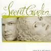

Celtic Lyrics Corner
>
Artists & Groups
>
Secret Garden
> Once In A Red Moon

Once In A Red Moon
(2002)
Tracks
:
1. Awakening
2.
You Raise Me Up
3. Silent Wings
4.
Greenwaves
5. Invitation
6. Duo
7. Belonging
8.
Gates Of Dawn
9. The Promise
10. Fairytale
11. Once In A Red Moon
12. Elegie